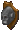
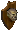
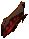
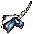
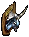

剥製の作成
１．作成に必要なもの
 a taxidermy kit[剥製キット]
a taxidermy kit[剥製キット]
NPCの皮屋（職業：Tanner）が10万gp（Trammel価格）で販売しています。 木の板10枚
木の板10枚- 釣り上げた魚介類、動物またはモンスターの死体
- Great hart
- Brown Bear
- Polar bear
- Gorilla
- Orc
- Troll
- Big fish（釣りスキル80.0以上あれば、深海でまれに釣り上げることができます）、Mud Puppy、Red Herring
- Dragonfish
- Marlin
- Crab（レア）
- Lobster（レア）
- Firefish形状（レア）
- Koi形状（レア）
２．剥製の作成方法
剥製は以下の流れで作成することができます。
- taxidermy kitと木板10枚を自分のバックパックに用意します。
- 対象となる動物またはモンスターの死体のそばでtaxidermy kitをダブルクリックします。
- 対象となる動物の死体またはBig fishをターゲットにすると、剥製のDeedが作成されます。
作成に関する注意
- taxidermy kitを購入および使用するためには、大工スキルが90.1以上必要です。
- taxidermy kitは1回限りの使いきりです。
３．剥製の画像
| Great hart |
|
|
| Gorilla |
|
 |
| Brown bear |
|
|
| Polar bear |
|
|
| Orc |
 |
|
| Troll |
 |
|
| Big fish |
|
|
| Dragonfish |
|
|
| Marlin |
|
 |
| Crab |
|
 |
| Lobster |
|
|
| Firefish |
 |
|
| Koi |
|
|
剥製のDeedをダブルクリックして家の壁際をターゲットにすると、下の画像のようにどちらの向きに飾るか選択できます。
飾った後は剥製をダブルクリックすると、もとのDeedに戻すことができます。
FirefishとKoiの剥製は、Publish71以降作成できるようになります。
４．Mounted Dread Hornについて
宝珠の守人の新ダンジョン「Twisted Weald」のボスDread hornが、戦利品としてpristine dread hornを落とします。
ただし、入手できる確率は低く、多くはmangled dread horn（ずたずたの頭）を落とします。
pristine dread hornと木材を使い、大工スキルを使いmounted dread hornを作成することができます。
必要材料
- pristine dread horn×1
- board×50
特殊木材を使用すると、素材の色を反映させることもできます。その後Pigments of tokunoによる染色も可能です。
見た目は上と似たような剥製ですが、こちらはtaxidermy kitを使わずに作成します。
剥製の向きは作成時に選択できず、家にロックダウンしてからInterior Decorator（NPC Architectがおよそ10000gpで販売）
を使って向きを変えます。
（初期） ←―→ （向き変更）